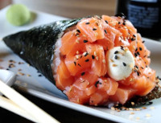
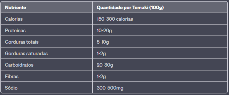

Cardápio
Bem-vindo ao nosso cardápio, onde você encontrará pratos deliciosos que combinam sabores e técnicas tradicionais com ingredientes frescos e de alta qualidade. Venha experimentar nossa culinária e descubra os sabores do Oriente em cada mordida.

Temaki
O temaki é um prato típico da culinária japonesa que consiste em um cone de alga nori recheado com arroz temperado e diversos tipos de ingredientes, como peixe cru, legumes, frutas e molhos. É um prato muito popular no Japão e também em muitos outros países ao redor do mundo, onde é apreciado como uma opção de comida rápida e saudável.
O temaki pode ser consumido como uma refeição completa ou como uma opção de petisco para compartilhar com amigos e familiares.